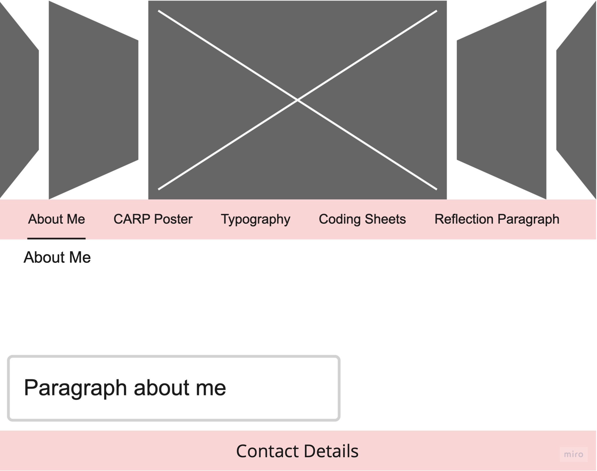

In this section I will be discussing and evaluating the steps I took to create this website.



These are the wireframes for my website. Underneath is the flowchart.
This is the moodboard I created for the website.
Coming into this course module I was very excited because I had some experience with
coding but not
really any experience with InDesign or Illustrator. I was enthusiastic to develop my HTML and CSS skills
as well as
learning how to use software that was new to me.
The first task sheet was the CARP posters. I didn’t really struggle with the CARP
features for the 3
posters. For the final poster struggled slightly with using up all the white space. I enjoyed this task
because I could
be as creative as I wanted and input my own ideas into the poster. Then came the typography task which I
didn’t really
struggle with at all. I enjoyed this task because it was quite simple with no images and only being able
to use 3 colours
meant experimenting with different font weights and even shapes. At the same time, it was impressive to
see all 8 typographic
systems set up with the exact same text, yet they all looked so different. While completing these tasks
we also had the weekly
coding sheets. Each worksheet developed a range of different skills. These were helpful especially when
it came to creating my
own website.
It was the exciting part. I had created a website from scratch previously for my A
levels, I was enthusiastic to
do it all again to a much higher standard. Started with a wireframe which gave me a layout of each
webpage, which briefly stuck to
for each page. Then the pretty part, the mood board. I began by combining the colours from my typography
and my CARP posters to create
a split complimentary colour palette in adobe. I continued this colour scheme throughout my website to
ensure all pages and buttons
matched. I included images from websites that inspired me with their layouts or features. I chose my
font family when creating the
mood board and used that same family throughout just changing sizes and weights.
Originally, I planned on having the same carousel of images on each page, but I
couldn’t decide what photos where
relevant for each page. So, I used it on the About Me page so that I could use images of myself. The
other layout feature that I
changed was the navigation bar. In my wireframe it went navigation bar then title but in my final
website it went title of page and
then navigation bar. The buttons are white with black text and a yellow border, when a mouse hovers over
each one they slowly go
blue with white text still with the yellow border. All these colours came from my mood board and colour
scheme. The buttons text
size was medium so that the buttons all fit on one line even when the page is shrunk. Nearly all the
pages have a “back to top”
button for much easier navigation which saves scrolling all the way up creating a nicer user experience.
On the CARP page a used
a blue background for the first part of text so that it matched the main colours of the posters I
created.